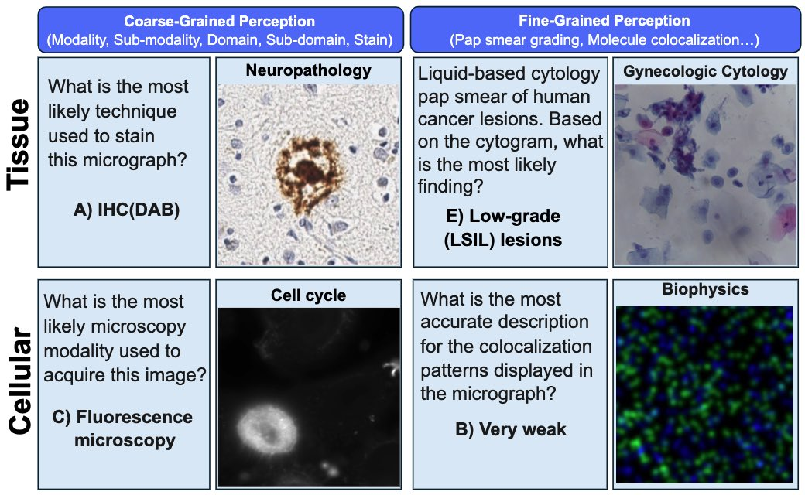

|
James Burgess I am a Stanford PhD student working on computer vision and machine learning. I'm fortunate to be advised by Serena Yeung-Levy and to be supported by the Quad Fellowship. My methods work focuses on vision-language models, evaluation, and diffusion models. I also develop multimodal large language models for biology research. |
{kind=link}
Research |

|
Video Action Differencing
James Burgess, Xiaohan Wang, Yuhui Zhang, Anita Rau, Alejandro Lozano, Lisa Dunlap, Trevor Darrell, Serena Yeung-Levy In review pdf / benchmark We propose Video Action Differencing, a new task for identifying subtle differences between videos of the same action, with a comprehensive benchmark, and an agent-based method. |

|
MicroVQA: A Multimodal Reasoning Benchmark for Microscopy-Based Scientific Research
James Burgess*, Jeffrey J Nirschl*, Laura Bravo-Sánchez*, Alejandro Lozano, Sanket Rajan Gupte, Jesus G. Galaz-Montoya, Yuhui Zhang, Yuchang Su, Disha Bhowmik, Zachary Coman, Sarina M. Hasan, Alexandra Johannesson, William D. Leineweber, Malvika G Nair, Ridhi Yarlagadda, Connor Zuraski, Wah Chiu, Sarah Cohen, Jan N. Hansen, Manuel D Leonetti, Chad Liu, Emma Lundberg, Serena Yeung-Levy In review pdf / benchmark A benchmark for research-level reasoning in biological microscopy, with a method for making multiple-choice VQA more challenging. |
|

|
Micro-Bench: A Vision-Language Benchmark for Microscopy Understanding
Alejandro Lozano*, Jeffrey Nirschl*, James Burgess, Sanket Rajan Gupte, Yuhui Zhang, Alyssa Unell, Serena Yeung-Levy NeurIPS Datasets & Benchmarks 2024 project page / arXiv / code A Vision-Language Benchmark for Microscopy Understanding. |
|
|
Global organelle profiling reveals subcellular localization and remodeling at proteome scale
Hein et. al. (including James Burgess) Cell 2024 bioRxiv / code A proteomics map of human subcellular architecture, led by the Chan-Zuckerberg Biohub. |

|
Viewpoint Textual Inversion: Discovering Scene Representations and 3D View Control in 2D Diffusion Models
James Burgess, Kuan-Chieh Wang, Serena Yeung-Levy ECCV 2024 Outstanding Paper Award at the ECCV Workshop "Emergent Visual Abilities and Limits of Foundation Models" project page / arXiv / code We show that 2D diffusion models like StableDiffusion have 3D control in their text input space which we call '3D view tokens'. |

|
Orientation-invariant autoencoders learn robust representations for shape profiling of cells and organelles
James Burgess, Jeffrey J. Nirschl, Maria-Clara Zanellati, Alejandro Lozano, Sarah Cohen, Serena Yeung-Levy Nature Communications 2024 paper / code Unsupervised shape representations of cells and organelles are erroneously sensitive to image orientation, which we mitigate with equivariant convolutional network encoders in our method, O2VAE. |
|
I stole this website template from Jon Barron who published his source code here. |